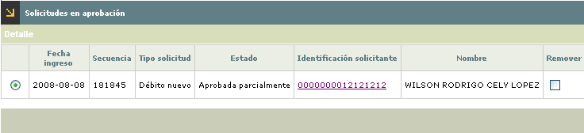

Solicitudes por etapa - Aprobación
Resumen: Este formulario corresponde al tercer paso del wizard, en él se muestran las solicitudes que fueron marcadas en el paso anterior - Solicitudes.
A través de la opción Detalle de la parte superior, se puede consultar la solicitud seleccionada. Adicionalmente, se puede consultar el detalle del cliente por medio del vínculo ubicado en la Identificación del solicitante. Por último, cuando se trata de una solicitud de Principal con adicional se mostrará la opción Adicionales en la parte superior, la cual invoca el detalle de este tipo de solicitudes.

|
Fecha ingreso |
Muestra la fecha en la cual se grabó la solicitud. |
|
Secuencia |
Campo de salida que ilustra el número consecutivo asignado por el sistema y que permite diferenciar e identificar las solicitudes. |
|
Tipo solicitud |
Muestra el tipo de solicitud a tramitar en el formulario. |
|
Estado |
Indica la condición en que se encuentra la solicitud al arribar a esta etapa, las cuales pueden ser: Aprobada totalmente o Aprobada parcialmente. |
|
Identificación solicitante |
Contiene tanto el tipo de documento como el número del mismo, que identifica al solicitante. |
|
Nombre |
Despliega el nombre del solicitante. |
|
Remover |
Las solicitudes que sean seleccionadas con este campo, serán omitidas en las acciones que se tomen en el formulario. |
El formulario cuenta con botones en la parte inferior izquierda, a través de los cuales se pueden tomar acciones que afectan a la totalidad de las solicitudes que se encuentran filtradas. Estas acciones aplican para todas las solicitudes del formulario, omitiendo a aquellas que se encuentren seleccionadas en la columna Remover.
|
|
Aprobar solicitud: Funcionalidad que permite pasar las solicitudes a la siguiente etapa siempre y cuando cumplan con los requisitos necesarios acorde con los parámetros definidos; en caso contrario la solicitud será negada. |
|
|
Retroceder etapa para solicitud: Permite retornar las solicitudes ubicadas en el formulario, omitiendo aquellas que tengan seleccionada la columna Remover. Si la solicitud ya ha sido aprobada o negada totalmente, no permite su retroceso. |